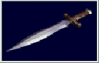
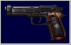
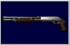
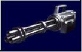
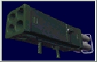

|
惡靈古堡３-----武器介紹
|
|
 野戰刀基本裝備，攻擊速度快，攻擊力超低，受場地限制大 ，在攻擊時碰到 阻礙物會彈開， 下段攻擊距離最長且速度最快。 |
|
 M92F Beretta特製手槍 S.T.A.R.S.專用手槍，是特製的強化版，初期裝備，彈匣可裝 15 發子彈 ，攻擊力平平。 |
 SIGPRO SP2009傭兵手槍 Carlos的初期裝備，為減輕重量而使用不少塑膠材質，射擊速度也比較 快，傭兵專用手槍。 |
打敗追跡者兩次，分別可以得到 EAGLE 6.0 手槍的組件 A和 B ，組合之後得到EAGLE 6.0 手槍，是 以競技為目的所開發的自製槍，彈匣可裝 15 發，攻擊力雖然沒有比一般手槍高，對僵屍一擊斃殺 率卻會上升。 |
9 x 19的帕拉貝拉姆彈，手槍通用的子彈，是子彈中 POWER 最弱的一種，一副彈匣裝 250 發子彈， 在調配彈藥粉的經驗足夠後（調配八次以上）即可配出強化彈， POWER 較一般手槍子彈更強，裝 備在不同的槍上也有不同的威力，可惜強化彈無法裝配於EAGLE手槍。 |
 BENELLI M3Super90散彈槍 是為了方便使用而截短的散彈槍，攻擊範圍大，近距離攻擊力強，彈匣可裝 7 發，適合在被僵屍包圍時使用。 |
在打敗追跡者第四、五次時分別會得到 M37 的組件 A 和 B ，組合後得到西部制式 M37 散彈槍，連 射速度比Benelli散彈槍快，射擊距離較短。 |
散彈槍通用的子彈，調配彈藥經驗足夠（八次以上）可配出強化彈，攻擊力的增加在射擊的聲音就 可以聽出來。 |
不�袗�製的舊款大型左輪手槍，彈匣可裝６發，對追跡者以外的敵人有一槍斃命的能力，手槍為了 消減強大的後座力而加重，使得連射不便。 |
特別為了警察而製作的 HK-p 小型硫彈槍，有四種不同的彈藥可供裝填，冷凍彈是三代的新彈藥， 射程不遠，不過四種不同屬性的彈藥倒是能針對敵人特性使用。 |
彈匣可裝６發，是 Umbrella 公司開發的新武器，現在還在試用階段，由於彈藥上裝備了感應器，發 射後並不會立刻爆炸，敵人接觸後才會爆炸，連周圍的敵人也逃不過。 |
Carlos 的主要武器，連射速度快，對動作快的敵人有制止的功效，彈藥以％計算，同時也是隱藏武 器之一，在傭兵模式售價 2000 元。 |
|
 旋轉機關槍 隱藏武器，劇情中無法取得，傭兵模式中售價 3000 元，發射準備時間長，容易遭到攻擊，不過攻 擊範圍大，連射速度快，攻擊力也不錯。 |
|
 M66火箭砲 劇情中可以取得４發，隱藏武器之一， 屬於舊型火箭砲，攻擊範圍大，攻擊力最強，攻擊準備和連 射速度慢，傭兵模式中售價4000 元。 |
|
無限彈 在第二輪遊戲中打倒追跡者第七次得到，傭兵模式中售價 9999 元，可以任意填入各種槍械之中， 該槍械即可擁有無限的彈藥，若從傭兵模式中購得，道具箱中並不會出現，因為以後拿到的任何槍 械皆子彈無限。 |
惡靈深淵Biohazard Abyss http://98.to/coolbio